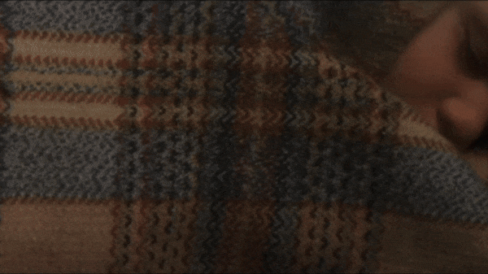
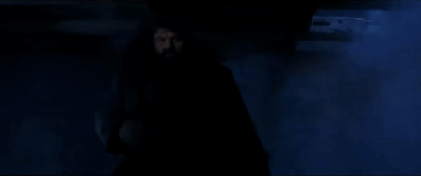
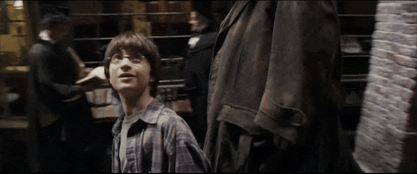
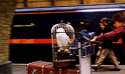
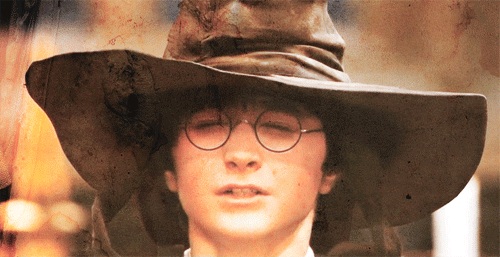
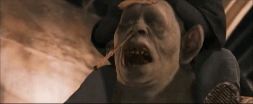
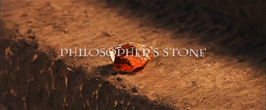
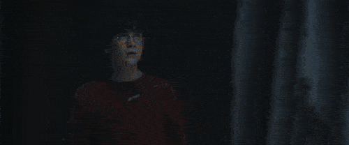
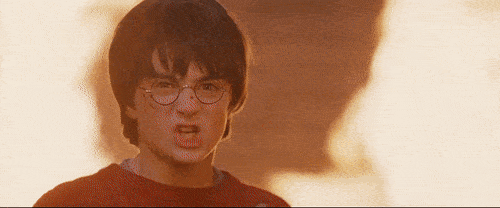
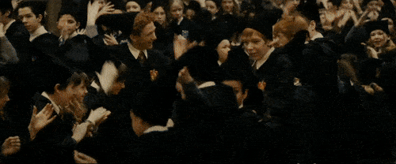

The Boy Who Lived
This moment sets the stage for the entire series, revealing the tragic backstory of Harry Potter's parents' death at the hands of Voldemort and Harry's survival as the only known person to survive the Killing Curse.
Hagrid's Visit
Hagrid's arrival at the Dursleys' home is a pivotal moment for Harry as it marks his introduction to the wizarding world. Hagrid's revelation about Harry's true identity and his delivery of the Hogwarts acceptance letter ignite Harry's journey into the magical realm.
Diagon Alley
Harry's exploration of Diagon Alley is a mesmerizing experience for both him and the readers. It's the first glimpse into the enchanting world of wizards and witches, complete with magical shops like Ollivanders, Gringotts, and the Leaky Cauldron. .
Platform 9¾
Boarding the Hogwarts Express from Platform 9¾ is Harry's first taste of magical transportation. It's a moment filled with excitement and wonder as he embarks on his journey to Hogwarts School of Witchcraft and Wizardry.
Sorting Hat Ceremony
The Sorting Hat ceremony is a significant moment for Harry as he is officially sorted into Gryffindor House. This event not only determines his Hogwarts house but also introduces him to lifelong friends Ron and Hermione.
The Troll Incident
The encounter with the mountain troll in the girls' bathroom is the trio's first adventure together. It showcases their bravery, loyalty, and budding friendship as they work together to overcome a dangerous situation.
The Philosopher's Stone
The mystery surrounding the Philosopher's Stone serves as a central plot point in the story. Its discovery and the subsequent quest to protect it from Voldemort's clutches drive much of the narrative tension and excitement.
Wizard's Chess
The game of wizard's chess is a thrilling and pivotal moment in the story. Ron's sacrifice highlights the theme of selflessness and underscores the strength of friendship as Harry and Hermione continue their quest to stop Voldemort.
Confrontation with Voldemort
The climactic showdown in the underground chamber is a moment of intense danger and bravery for Harry. His confrontation with Voldemort showcases his courage and determination to thwart the Dark Lord's evil plans.
House Cup Victory
Gryffindor House's unexpected victory of the House Cup is a triumphant conclusion to the school year. It celebrates the courage and heroism of Harry and his friends, solidifying their place as beloved characters in the Hogwarts community.